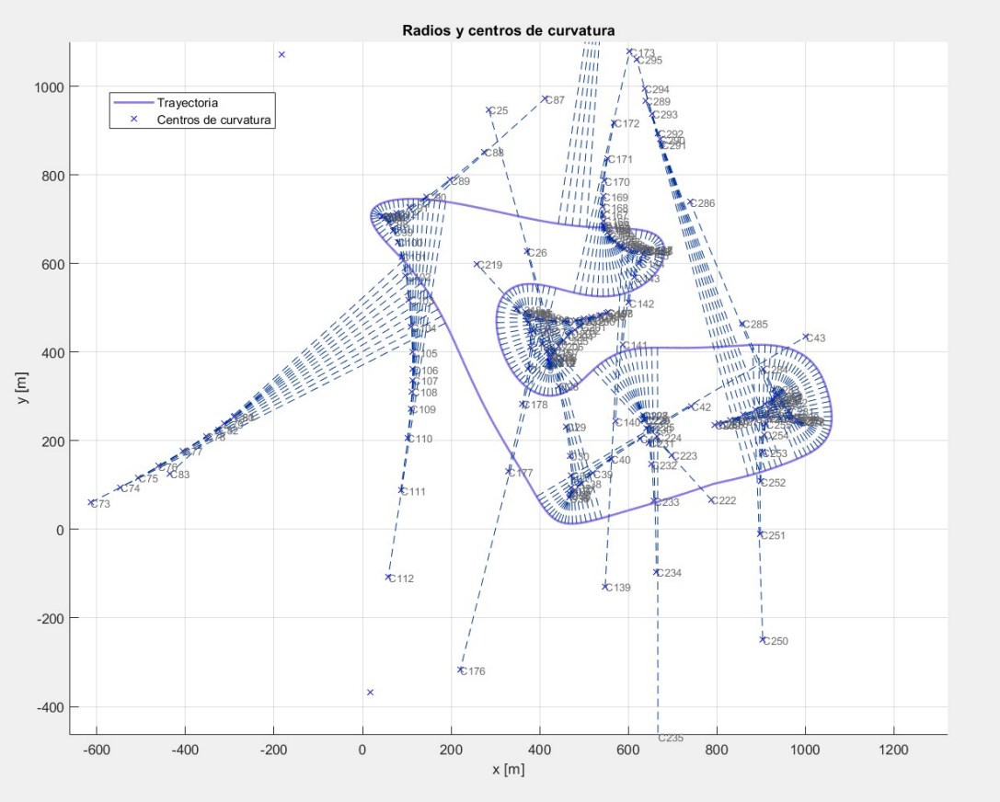

Curious to explore further?
Some details couldn't fit into the poster, so this page brings together additional visualizations and simulation material from the study, offering a closer look.
01. Trajectory Reconstruction and Curvature Estimation
The local centers of curvature were estimated iteratively using three consecutive points of the reconstructed trajectory, allowing the corresponding radii of curvature to be determined. This analysis provides a geometric reference for the vehicle's center-of-mass path, identifying turn directions (left or right) and showing that smaller radii correspond to sharper turns along the circuit.

02. Vehicle Trajectory and Dynamic Response Visualization
Simulation of a reconstructed lap of the Red Bull Ring, displaying the vehicle's center-of-mass trajectory associated steering angle (in degrees).